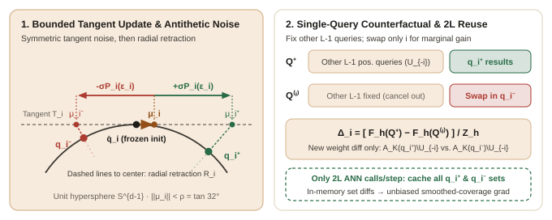
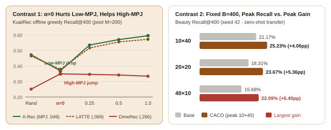

Contents · 7 sections
1The Overlap Trap in Multi-Query Retrieval2Constructing a Coverage Proxy from Sampling Frequencies3Lightweight Coordination in the Spherical Tangent Space4Bypassing Non-Differentiable Retrieval with Antithetic Perturbations5Fixed-Budget Protocol and Main Experimental Results6Four Key Contrasts in the Ablation and Breakdown Results7Online Inference Cost and Applicability BoundariesSHARE
CACO: Coordinating Multi-Query Set Coverage in Spherical Tangent Space Without Changing the Retrieval Budget
Continuous generative retrieval leverages diffusion models or Riemannian flow matching on the unit hypersphere to sample query vectors in parallel within a fixed item embedding space, conditioned on user historical interactions and action context . Each query runs an approximate nearest-neighbor (ANN) search to fetch top- candidates , returning the deduplicated union . Under a fixed retrieval slot budget , this paradigm appears to cover multifaceted interests through multi-path sampling, yet the paper identifies two structural failure modes arising because existing retrievers typically promote distribution diversity or target-level interest separation without explicitly accounting for set-level retrieval geometry. First, independently sampled generators (such as DimeRec and X-Rec) are unaware of one another; even a diverse query distribution can yield heavily overlapping ANN results. Second, even when coverage-unaware multi-interest methods like ComiRec, REMI, and MIMA (a multi-interest matching retriever) separate interests at the representation level or via positive-sample assignment, queries matched to different targets can still produce heavily overlapping top- neighborhoods in embedding space.
The Overlap Trap in Multi-Query Retrieval
Faced with this set-level retrieval overlap, the most straightforward engineering workaround is to increase the per-query retrieval depth and deduplicate or truncate post hoc. However, such post-hoc compensation both inflates ANN retrieval overhead and leaves the query generation distribution itself unchanged, so individual queries still waste effective slots on duplicates. Making the queries genuinely complementary while keeping both the query count and per-query depth fixed boils down to jointly optimizing queries directly for set-level coverage.
Yet optimizing set coverage directly in recommender systems runs into a fundamental constraint: the lack of full relevance supervision. Interaction logs typically record only a single observed positive item per request, and point-level supervision cannot capture the user's full latent interest distribution; conversely, pushing queries apart without regard for relevance wastes scarce retrieval slots on irrelevant items.
Constructing a Coverage Proxy from Sampling Frequencies
To work around the absence of full relevance labels, CACO (Coverage-Aware Coordinated Optimization)—developed by researchers from Hunan University, Huazhong Agricultural University, and a Beijing-based team—proposes a self-supervised post-training framework. Its starting premise is that a trained, frozen base generator already encodes a context-dependent candidate prior in its conditional sampling distribution. For each user context , CACO first independently samples reference queries from the frozen base and executes top- retrieval for each, tallying how many times each item in the corpus is retrieved across the searches: . A concave power mapping then converts these counts into relevance proxy weights , defining the frequency-weighted set-coverage objective:
$$
F_h(Q) = \sum_{v \in \mathcal{U}_K(Q)} w_h(v), \qquad
w_h(v) =
\begin{cases}
c_h(v)^{\alpha}, & \alpha \in (0, 1], \
\mathbf{1}{c_h(v) > 0}, & \alpha = 0
\end{cases}
$$
Because the sum runs over the deduplicated union , once an item is retrieved by one query, subsequent queries hitting the same item contribute zero marginal gain; items never retrieved by the reference pool receive weight . The exponent controls the concavity of diminishing marginal returns with retrieval count. Setting reduces the objective to unweighted set coverage treating every item hit by the reference pool equally, whereas weights items linearly by count. The paper defaults to to preserve frequency distinctions while curbing the dominance of high-frequency popular items.
Before designing a neural network, the authors first verify whether this label-free proxy objective points in the right direction: under the paper's main evaluation setting ( queries, neighbors per query, measured by the deduplicated union hit rate ), they run offline greedy selection over an reference query pool. At each step, the algorithm selects from the remaining reference queries the one yielding the largest marginal weight over uncovered items:
$$
\Delta_h(q \mid Q) = \sum_{v \in \mathcal{A}_K(q) \setminus \mathcal{U}_K(Q)} w_h(v)
$$
The authors sweep the weighting exponent across 30 combinations spanning 5 retrieval backbones (LATTE, X-Rec, DimeRec, Base, and the subsequently trained CACO) and 6 datasets (Beauty, Sports, Toys, KuaiRec, ML-25M, and an in-house industrial dataset). Across all 4 tested positive exponents , offline greedy selection improves in all 30/30 settings compared with the baseline that randomly draws 20 queries from the reference pool.
Still, offline greedy selection only validates the objective's direction and cannot be deployed directly online—generating queries and executing 200 ANN searches per request incurs prohibitive latency and compute cost. Nor can one simply treat the greedy-selected queries as teachers and distill them via vector regression (the greedy distillation baseline, GD, in the ablations below): tiny distance errors in continuous embedding space can cross discrete ANN neighborhood boundaries, so matching query vectors does not guarantee preserving set-level retrieval coverage. Transferring this offline coverage advantage into a single forward pass over a fixed set of queries requires a lightweight coordination module that observes global query states and learns directly from coverage changes in discrete retrieval results.
Lightweight Coordination in the Spherical Tangent Space
Architecturally, CACO keeps both the base generator and the unit-normalized item embeddings completely frozen, attaching a lightweight coordinated query adjustment network (only layers, hidden dimension 128, attention heads, and ~0.63M parameters in public experiments) right after the base independently samples unit-normalized initial queries . The continuous generative base already includes a user history sequence encoder, which simultaneously supplies history hidden states . Each adjustment layer applies three operations in fixed order: cross-attention grounding each query on , unmasked bidirectional self-attention allowing the queries to exchange positional and intent information, and a feed-forward network (FFN).
If the network only linearly projected the LayerNorm-normalized final query hidden state into a residual direction, queries would still rely solely on implicit feature interactions to steer clear of one another. CACO introduces an additional signed relative directions gate. Specifically, using the last-layer self-attention weights of head ( attention heads, distinct from the retrieval operator ) and a learnable vector shared across queries in that head, the model computes scalar weights . It then explicitly aggregates the relative direction vectors toward other initial queries with and combines them with the hidden-state projection to obtain the raw adjustment vector :
$$
r_i = W_r \overline{X}_i^{(N)} + \sum_{j=1}^{L} \beta_{ij}(\dot{q}_j - \dot{q}_i), \qquad
\beta_{ij} = \frac{1}{\sqrt{A}} \sum_{a=1}^{A} \bigl(w_a^{\top} \overline{X}_i^{(N)}\bigr) a_{ij}^{(a)}
$$
Because is not restricted to and can take either sign, each query can actively repel itself from overlapping neighborhoods or move gently toward high-value regions. CACO then projects onto the tangent space of the unit hypersphere at , applies bounded scaling, and retracts the vector back onto the sphere to preserve unit norm:
$$
P_i(v) = v - \langle v, \dot{q}_i \rangle \dot{q}_i, \qquad
\mu_i = \frac{P_i(r_i)}{\sqrt{1 + |P_i(r_i)|^2 / \rho^2}}, \qquad
q_i = \frac{\dot{q}_i + \mu_i}{\sqrt{1 + |\mu_i|^2}}
$$
Since and , right-triangle geometry immediately gives for the deterministic update. The paper defaults to , strictly restricting each query's deterministic angular displacement at inference relative to its initial query to within (during training, untruncated Gaussian exploration noise is added after bounding , so perturbed training queries can exceed ). Meanwhile, zero-initializing the output projection and relative-direction gating parameters guarantees that the network starts as an exact identity mapping (), preserving the base generator's initial queries at the onset of training.
Bypassing Non-Differentiable Retrieval with Antithetic Perturbations
Once the forward network stably outputs tangent-space steps , the central training hurdle is that embeds non-differentiable discrete top- ANN lookup. Rather than resorting to soft-ranking approximations, CACO draws on the Gaussian-smoothing score identity from evolution strategies to build an unbiased gradient estimator for the Gaussian-smoothed expected coverage objective using true discrete retrieval results. Specifically, for each query, it independently samples standard Gaussian noise , applies symmetric antithetic perturbations in the tangent space, , and retracts them onto the sphere to obtain a paired query tuple and . In the paper's experiments, item and query embeddings have fixed dimension , giving a tangent-space dimension of ; the default perturbation scale sets the root-mean-square tangent noise norm to , corresponding to an average local exploration angle of roughly .
Deciding whether query should move toward or cannot be scored in isolation—it must measure net marginal gain in the context of the remaining queries. CACO forms a reference collection using all positively perturbed queries, then constructs for each a counterfactual collection that substitutes only with . Letting denote the total reference-pool weight, it defines query 's normalized coverage difference (distinct from the offline greedy marginal gain ) and surrogate training loss:
$$
\Delta_i = \frac{F_h(Q^+) - F_h(Q^{(i)})}{Z_h}, \qquad
\mathcal{L}_{\mathrm{train}} = -\sum_{i=1}^{L} \frac{\Delta_i \langle \mu_i, \epsilon_i \rangle}{2\sigma}
$$
During backpropagation, is treated as a constant. Because the retrieval union of the other queries cancels out exactly in the difference, captures only the difference in weights of items newly covered by versus that are missed by the other queries; when , the gradient pulls toward , and otherwise pushes it toward . Moreover, in this normalized training signal (and in ), replacing raw counts with normalized frequencies introduces only a common factor that cancels with ; the equivalence holds only for this normalized signal, whereas unnormalized itself scales by . Computationally, running one ANN search for each of the queries and queries and caching their candidate sets allows all counterfactual values to be computed in memory via set differences—requiring only retrievals per training step instead of re-querying the index for every single-query replacement.
In the standard 2-epoch training pipeline on public datasets, epoch 1 uses the reference pool and item weights sampled from the frozen base; after epoch 1 finishes, the authors resample a new reference pool using the partially trained adjustment network—which already exhibits greater dispersion—to refresh before continuing to train the same network for epoch 2. The intent is that more dispersed adjusted queries can surface potentially relevant items previously masked by overlap in the frozen base, supplying richer supervision for epoch 2; because the refreshed weights remain fixed during gradient computation, the gradient estimator remains unbiased for the Gaussian-smoothed expected coverage objective defined by those refreshed weights. However, the double-edged behavior of this refresh under cross-budget transfer warrants closer inspection in the ablation analysis below. Hoot says



Source
Paper diagramExpand: Unbiasedness Proof Sketch for the Gaussian-Smoothed Gradient & Single-Step CACO Training Pseudocode
1. Why Antithetic Single-Query Replacement Yields an Unbiased Gradient for the Smoothed Coverage Objective (Proof Sketch of Theorem C.2)
Fix the context, initial queries , reference-pool weights , and a measurable retrieval rule (including its index, filtering, and tie-breaking rules), denoted collectively by . Define the spherical retraction operator (), and write the normalized coverage as a function of tangent coordinates , where . Applying Gaussian smoothing gives the objective:
$$
J_\sigma(\mu\mid\mathcal{C}) = \mathbb{E}_{\epsilon}\big[f_{\mathcal{C}}(\mu + \sigma P\epsilon)\mid\mathcal{C}\big]
$$
Choose an orthonormal basis for each tangent space (satisfying ), denote the total tangent dimension by , and let be the density of on . In local coordinates , is an ordinary Gaussian convolution, so the Gaussian score identity immediately yields:
$$
\nabla_{\mu_i} J_\sigma(\mu\mid\mathcal{C}) = \frac{1}{\sigma Z_h}\mathbb{E}_{\epsilon}\big[F_h(Q^+) P_i\epsilon_i \mid \mathcal{C}\big]
$$
Next, form by negating only block of . Because the noise blocks are independent across queries and Gaussian distributions are symmetric, has the same conditional distribution as , and single-query replacement satisfies . A change of variables yields . Subtracting the two identities and dividing by 2 establishes that is conditionally unbiased for .
Finally, for the parameter gradient, note that uses the unprojected inner product rather than . Writing and the bounding factor , the output always lies in , so its Jacobian with respect to parameters satisfies . Backpropagation therefore removes the radial component of automatically, and holds strictly.
2. Single-Step CACO Training Pseudocode (PyTorch-Style)
# q0: (N_batch, L, d) unit queries sampled from frozen base; H: (N_batch, T, d_h) frozen history hidden states
# w_h: precomputed reference-pool item weight dictionary, Z_h = sum(w_h)
r = adjust_net(q0, H) # CrossAttn + Bi-SelfAttn + Relative-Dir Gate
t = r - (r * q0).sum(dim=-1, keepdim=True) * q0 # Tangent-space projection P_i(r_i)
mu = t / torch.sqrt(1.0 + t.pow(2).sum(-1, keepdim=True) / (rho ** 2))
eps = torch.randn_like(q0)
eps_tan = eps - (eps * q0).sum(dim=-1, keepdim=True) * q0 # P_i(eps_i)
with torch.no_grad():
mu_pos = mu + sigma * eps_tan
mu_neg = mu - sigma * eps_tan
q_pos = (q0 + mu_pos) / torch.sqrt(1.0 + mu_pos.pow(2).sum(-1, keepdim=True))
q_neg = (q0 + mu_neg) / torch.sqrt(1.0 + mu_neg.pow(2).sum(-1, keepdim=True))
# Only 2L ANN searches per step; cache all positive/negative candidate sets
A_pos = ann_search(q_pos, K) # shape: (N_batch, L, K)
A_neg = ann_search(q_neg, K) # shape: (N_batch, L, K)
# Compute per-query counterfactual marginal weight difference Delta_i in memory
delta = compute_counterfactual_marginal_diff(A_pos, A_neg, w_h, Z_h) # (N_batch, L)
loss = -(delta * (mu * eps).sum(dim=-1)).sum(dim=-1).mean() / (2.0 * sigma)
loss.backward()
optimizer.step()Fixed-Budget Protocol and Main Experimental Results
How much net gain does this frozen-backbone, two-epoch self-supervised post-training framework deliver on actual retrieval benchmarks? Before comparing numbers, it helps to clarify the paper's unified evaluation protocol. The 8 public benchmarks span Amazon 2014 (Beauty, Sports, Toys), Amazon 2023 (Instruments, Games, Movies), KuaiRec, and ML-25M, all evaluated under chronological leave-one-out single-target evaluation (maximum history length 200), filtering out items already interacted with in the user's history without refilling. All compared methods share the same set of fixed 128-dimensional unit-sphere item embeddings (pretrained with a 2-layer causal Transformer on public datasets, and 128-dimensional multimodal embeddings on the industrial dataset). In the table, R@100 and R@400 are not single-vector top-100/400 lookups, but the hit rate of the deduplicated union under a fixed multi-query slot budget :
$$
\mathrm{Recall}@B = \mathbb{P}!\left(v^* \in \bigcup_{i=1}^{L} \mathcal{A}_K(q_i)\right), \quad \text{R@100: } 10\times 10,\quad \text{R@400: } 20\times 20
$$
To align slot budgets, discrete generative baselines (TIGER, LATTE, LLaDARec) similarly decode Semantic ID representations and retrieve top- nearest neighbors per decoded representation in the shared embedding space. In addition, CACO's Base backbone adopts X-Rec's sequence Transformer architecture (8 layers, ~8.47M parameters, 30 Euler integration steps, classifier-free guidance scale 3.0) without X-Rec's anchor conditioning. Still conditioned on user history and behavioral context, it directly sums historical item and action embeddings for unit-sphere flow matching, serving as a direct anchor-free backbone reference to isolate the gain of coordinated query adjustment. The paper does not further dissect the exact reasons why removing anchor conditioning causes Base and X-Rec to trade wins across different public datasets. CACO is trained solely at and evaluated zero-shot at R@100 () without retraining. All public results in the main table average across 3 training seeds × 2 inference seeds (6 runs total).
| Dataset (Users/Items) | REMI | MIMA | LATTE | LLaDARec | X-Rec | Base | CACO | Rel. Gain vs. Best |
|---|---|---|---|---|---|---|---|---|
| Beauty (22.4K/12.1K) | 0.067 / 0.096 | 0.099 / 0.157 | 0.106 / 0.184 | 0.053 / 0.092 | 0.115 / 0.206 | 0.113 / 0.185 | 0.142 / 0.236 | +23.72% / +14.78% |
| Sports (35.6K/18.4K) | 0.039 / 0.058 | 0.050 / 0.083 | 0.058 / 0.121 | 0.037 / 0.063 | 0.055 / 0.127 | 0.074 / 0.141 | 0.084 / 0.175 | +13.61% / +23.94% |
| Toys (19.4K/11.9K) | 0.063 / 0.086 | 0.096 / 0.150 | 0.093 / 0.178 | 0.045 / 0.085 | 0.117 / 0.207 | 0.117 / 0.192 | 0.141 / 0.244 | +20.59% / +17.92% |
| KuaiRec (7.2K/10.7K) | 0.289 / 0.500 | 0.163 / 0.316 | 0.247 / 0.433 | 0.248 / 0.434 | 0.246 / 0.475 | 0.261 / 0.426 | 0.301 / 0.500 | +4.10% / +0.01% |
| ML-25M (161K/40.9K) | 0.304 / 0.361 | 0.235 / 0.435 | 0.310 / 0.487 | 0.327 / 0.517 | 0.273 / 0.501 | 0.285 / 0.462 | 0.305 / 0.518 | — / +0.25% |
| Instruments (57.4K/24.6K) | 0.050 / 0.075 | 0.064 / 0.101 | 0.096 / 0.164 | 0.069 / 0.102 | 0.058 / 0.138 | 0.088 / 0.159 | 0.103 / 0.194 | +7.98% / +18.28% |
| Games (94.8K/25.6K) | 0.073 / 0.111 | 0.115 / 0.177 | 0.140 / 0.245 | 0.099 / 0.168 | 0.096 / 0.217 | 0.146 / 0.243 | 0.167 / 0.301 | +13.73% / +22.85% |
| Movies (657K/198K) | 0.044 / 0.062 | 0.049 / 0.073 | 0.083 / 0.142 | 0.083 / 0.139 | 0.058 / 0.119 | 0.093 / 0.154 | 0.104 / 0.180 | +11.27% / +16.51% |
Note: Each cell reports Recall@100 / Recall@400 on a 0–1 scale (e.g., 0.236 equals 23.6%); relative gain vs. best reflects CACO's unrounded relative improvement over the strongest other method (including Base). The paper's full comparison also includes ComiRec, TIGER, DreamRec, DimeRec, PreferDiff, TA-Rec, and ADRec.
Across the board, CACO ranks first on 15 of the 16 metrics across the 8 public datasets, improving over the frozen Base sharing the same generator by 1.01–3.99 percentage points on Recall@100 and 2.55–7.36 percentage points on Recall@400. The sole exception is ML-25M Recall@100 (0.305 vs. LLaDARec's 0.327), where CACO edges back ahead at Recall@400 (0.518 vs. 0.517); on the ultra-dense KuaiRec dataset, CACO beats Base by 7.4 percentage points while tying REMI on Recall@400 (0.500).
On the in-house streaming industrial dataset (24 sequential chronological partitions, ~2.6M training instances and 10,240 test requests per partition, ~448M-parameter backbone), CACO is evaluated on Recall@400 under the budget. It ranks first in 23 of the 24 partitions, maintaining a 2–3 percentage-point lead over Base throughout and pulling ahead of X-Rec on mid-to-late partitions after matching it early on. This shows that coordinated query adjustment remains effective as user preferences and candidate pools evolve over time.
To verify cross-backbone generality, the authors also apply the same CACO post-training pipeline to X-Rec, DreamRec, DimeRec, PreferDiff, and TA-Rec alongside Base (6 frozen backbones in total). Each setup keeps its backbone and item embeddings frozen, feeds in that backbone's own history features, samples and refreshes an reference pool mid-training, and trains a separate adjustment network for 2 epochs. Across all 18 paired settings (6 backbones × 3 Amazon 2014 datasets: Beauty, Sports, and Toys), every pair gains +0.89 to +8.72 pp in Recall@400, which shows that CACO generalizes across both flow-matching and diffusion architectures. Heavily collapsed DimeRec jumps from 10.38% to 19.10% (+8.72 pp) on Toys because coordination breaks up severe neighborhood overlap. Meanwhile, the already strong X-Rec still adds 2.79 pp on Beauty (20.57%→23.36%) and 3.89 pp on Toys (20.66%→24.55%), meaning that even strong generators leave exploitable redundancy on the table.
Four Key Contrasts in the Ablation and Breakdown Results
While the public benchmarks, streaming industrial partitions, and cross-backbone tests confirm overall recall improvements, determining which design choices actually drive those gains—and where the method hits its limits—requires reading the component ablations, exponent sweeps, budget allocations, and overlap strata side by side. The paper measures set-level retrieval redundancy directly using MPJ (mean pairwise Jaccard overlap), denoted , where lower values indicate fewer duplicate candidates across queries:
$$
\mathrm{MPJ}(Q) = \frac{2}{L(L-1)} \sum_{1 \le i < j \le L} \frac{|\mathcal{A}_K(q_i) \cap \mathcal{A}_K(q_j)|}{|\mathcal{A}_K(q_i) \cup \mathcal{A}_K(q_j)|}
$$
Note that the paper's breakdown experiments use slightly different random-seed protocols. The main table and reference-pool refresh table average 3 training seeds × 2 inference seeds, while the component ablation figure reports the mean over 3 training seeds. By contrast, the overlap-strata and fixed-budget-split tables use a single training seed (seed 42) averaged over 2 inference seeds, which is why Beauty reads 18.5% / 23.6% in the main table versus 18.31% / 23.67% in the single-seed breakdowns. The table below summarizes four core validation dimensions under their respective protocols:
| Validation Dimension | Scope & Seed Protocol | Key Metric Shifts | Core Empirical Finding |
|---|---|---|---|
| Component Ablation () | Beauty / Sports / KuaiRec / ML-25M (3-training-seed mean) | Relative to full CACO: removing query interaction w/o QI drops 10.21%–14.04% rel.; removing relative directions gate w/o RG drops 5.81%–10.93% rel.; greedy distillation GD drops 8.96%–40.93% rel. | Strict ordering ; GD falls below Base on three datasets |
| Initial Overlap Strata (Beauty ) | Grouped by validation-set Base MPJ tertiles (seed 42 × 2 inference seeds, ) | Base → CACO: Low () 8.86%→9.75% (+0.89 pp); Middle () 14.28%→17.02% (+2.74 pp); High () 33.42%→46.65% (+13.23 pp) | Positive gain in every stratum, with the largest absolute gain in the high-overlap group; overall avg. +1417.5 newly hit vs. 219.0 lost targets |
| Fixed-Budget Split () | Beauty / Sports / Toys (seed 42 × 2 inference seeds, zero-shot transfer) | Beauty Base → CACO: 21.17%→25.23% (+4.06 pp); 18.31%→23.67% (+5.36 pp); 15.68%→22.09% (+6.40 pp) | Absolute Recall peaks at for both, whereas CACO's coordination lift peaks at |
| Reference-Pool Refresh (5 public datasets) | Single 2-epoch mid-training refresh vs. 2-epoch fixed pool (3 training × 2 inference seeds) | Fixed → Refreshed: gains +0.121 to +0.893 pp across all 5 datasets; zero-shot transfer drops on Sports (-0.112 pp) and ML-25M (-0.551 pp) | Mid-training refresh steadily helps at the training budget, diverges across datasets under budget transfer; staged multi-round retraining plateaus or turns negative after rounds 2–3 |
The first contrast emerges from the component ablations. When removing QI (query interaction)—the w/o QI setting—masking off-diagonal self-attention retains each query's self-attention and residual transform while automatically zeroing out relative-direction terms from other queries through the definition of . Across the four datasets, this causes a 10.21%–14.04% relative drop in Recall@400. Under the ablation figure's 3-training-seed mean protocol, Beauty falls from 22.97% to 19.74% and KuaiRec from 49.20% to 42.97% (the paper does not separately explain the small gap relative to the main table's 6-run mean). Even when full bidirectional self-attention among queries is retained and only the RG (relative directions gate) branch is removed (w/o RG), Recall still drops by 5.81%–10.93%, though w/o RG consistently outperforms w/o QI. This indicates that on the tested architecture and datasets, explicitly aggregating signed relative directions provides additional complementary gains beyond the attention interaction. The overlap-strata breakdown—grouped by validation-set Base MPJ tertiles—also shows an uneven distribution of gains: on Beauty, the high-overlap group starts with much higher Base Recall than the low-overlap group (33.42% vs. 8.86%), and CACO achieves its largest absolute boost of +13.23 pp in this high-overlap bucket (the high-overlap group likewise shows the largest absolute gains on Sports and Toys, though the paper notes that the grouping alone does not establish causality). Across all 22,363 Beauty test examples, averaged over the two inference seeds, CACO newly hits 1417.5 targets while losing 219.0 previously hit targets, yielding a net +5.36 pp gain.
The second contrast appears in offline greedy selection's sensitivity to the weighting exponent (note that the Random baseline draws 20 queries at random from the 200-query reference pool, so its values differ slightly from full test-set evaluation in the main table). In most settings, unweighted deduplication () drives MPJ down to its lowest level (with minor exceptions such as X-Rec on Industrial or DimeRec on Sports/Toys), yet severely hurts Recall on backbones that already have low initial overlap. On KuaiRec (left panel below), low-overlap X-Rec (random-pool MPJ of just 0.049) and LATTE (MPJ 0.069) plunge in Recall@400 under from 0.472 to 0.369 and from 0.464 to 0.378, respectively, because ignoring frequency pushes queries toward peripheral, low-confidence items. Introducing even mild frequency weighting () immediately rebounds them to 0.535 and 0.516, peaking at (X-Rec on ML-25M follows the same trajectory: 0.504→0.398→0.618). Conversely, on heavily collapsed DimeRec (random-pool MPJ of 0.266 on KuaiRec and 0.622–0.668 across the three Amazon benchmarks), boosts KuaiRec Recall from 0.251 to 0.349, peaking in . Thus, the optimal is not a universal constant, but is negatively correlated with the backbone's intrinsic redundancy.
The third contrast comes from the budget allocation test at fixed . Shifting from the main experiment's to noticeably lifts absolute Recall@400 for both Base and CACO (on Beauty, Base rises from 18.31% to 21.17% and CACO from 23.67% to 25.23%, while distinct retrieved items climb from 164.7/236.9 to 197.2/267.6); meanwhile, CACO's absolute gain over Base widens monotonically as query count grows (+4.06 pp at vs. +6.40 pp at ). This monotonic trend naturally raises a critical question: if one continues shrinking and expanding (e.g., or even single-query ), would absolute Recall keep rising? Because the paper only evaluates , , and without reporting a single-query or smaller- control, the exact inflection point between multi-query and single-query retrieval remains open. Still, from the three tested allocations, the engineering takeaway is clear: calibrating the ratio and coordinating queries at a given ratio offer two additive layers of gain—even at the strongest setting, CACO still adds +2.87 to +4.06 pp.
The fourth contrast concerns the double-edged nature of reference-pool refreshes and the risk of displacing individual targets. On the one hand, in the single 2-epoch training runs across 5 public datasets, refreshing the reference pool with the adjusted network after epoch 1 consistently beats the 2-epoch fixed-pool control on every training seed at the training-matched budget (+0.121 to +0.893 pp). However, transferring directly to the narrower budget degrades Sports (-0.112 pp) and ML-25M (31.03%→30.48%, -0.551 pp). Moreover, in the appendix, the paper tests multiple iterative refreshes under a separate staged retraining protocol, where each reference-pool update on Sports, Instruments, and Movies retrains a fresh adjustment network from the same initialization for 2 epochs with its pool held fixed. Under this protocol, the first update delivers +0.37 / +0.45 / +0.27 pp, whereas the second and third updates see marginal gains vanish or turn negative (Sports declines, while Instruments and Movies plateau and dip slightly). On the other hand, the paper explicitly documents 3 representative failure cases (one each on Beauty, Sports, and Toys, each across both inference seeds). On these examples, CACO expands distinct retrieved items by 25–74 and slashes MPJ by 62%–74% on the Beauty and Sports cases—and even cuts MPJ by roughly 27%–29% on the already dispersed Toys example (0.038→0.027 and 0.030→0.022)—yet still pushes the target item that Base had hit in its 20-query top-20 union out of the final candidate set. Set-coverage optimization thus improves expected hit rate rather than guaranteeing superset containment of the original retrieval set. Hoot says


Source
Paper diagramOnline Inference Cost and Applicability Boundaries
After clarifying where the gains come from and the risk of displacing individual targets, deploying CACO requires checking its computational cost and operating boundaries. On the inference side, the added overhead is small because the adjustment network is lightweight: it adds only 0.629M parameters on the public datasets (8.465M→9.094M) and 1.025M parameters on the industrial model (448.350M→449.375M, about 0.23% of the backbone). The paper does not separately list the hidden-dimension configuration of the industrial adjustment network.
End-to-end inference timing is measured on NVIDIA H100 GPUs at batch size 32, covering host-to-device transfer, query generation, history-filtered exact cosine retrieval, device-to-host transfer, and deduplication. Under this protocol, CACO cuts test-set MPJ by 53.3%–64.9% across Beauty, Sports, Toys, and the industrial partitions. For instance, MPJ drops from 0.185 to 0.065 on Sports and from 0.125 to 0.058 averaged across the industrial partitions, which means far fewer retrieval slots are wasted on duplicate candidates. Meanwhile, end-to-end latency rises by only 0.03–0.13 ms per sample, or +0.51%–2.97% relative to Base, which shows the extra cost stays small even on the 448M industrial backbone (6.454 ms → 6.487 ms, an increase of 0.033 ms).
Compared against the alternative of keeping queries fixed and increasing retrieval depth before truncating post hoc, the retrieval-depth expansion experiment on the first industrial partition provides a direct benchmark. Measuring only the CPU ANN retrieval stage (excluding query generation) on a shared index as increases from 20 to 400—merging results rank by rank and capping the output at 400 distinct items without refilling—CACO reaches 20% Recall at (0.58 ms/sample CPU ANN), whereas Base must expand depth to (1.37 ms/sample CPU ANN) to match it. Post-hoc depth expansion and deduplication thus cannot replace front-end query coordination.
Before integrating CACO into a production retrieval stack, however, four boundaries that are either tied to its assumptions or outside the public measurements warrant evaluation:
- Training throughput and reference-pool construction cost: Lightweight inference does not imply lightweight training. Although candidate reuse compresses each training step to live retrievals, sampling reference queries per instance to build weight tables across million-scale streaming industrial partitions (~2.6M training instances per partition) and querying the index inside the training loop still consumes substantial compute and I/O. As a cost-reduction reference, sweeping the reference-pool size on the three smaller public Amazon benchmarks (Beauty, Sports, and Toys) shows that shrinking to 20 retains 89%–91% of the
Recall@400gain achieved at (this retention ratio has not been re-verified on the industrial streaming dataset). - Dependence on the frozen backbone's prior: In the epoch-1 reference pool, items never retrieved by the frozen base receive weight 0. While the epoch-2 reference-pool refresh can leverage more dispersed adjusted queries to surface some potentially relevant items initially missed by the base—and untruncated Gaussian perturbations during training are not capped at —each query at inference still starts from the frozen base's initial query with its deterministic angular displacement bounded within of . CACO therefore excels at mitigating neighborhood overlap among the base's sampled queries and unlocking candidates within their surrounding neighborhoods, rather than compensating from scratch for distant interests that the base lacks capacity to represent.
- Industrial disclosure gaps and unverified downstream conversion: Due to commercial confidentiality, the industrial evaluation only states that each partition's candidate pool consists of the target items in that partition, and it reports recall and latency under the measured setup. Absolute candidate-pool sizes, the ANN index type, and whether the additional distinct candidates convert through downstream coarse and fine ranking still need to be checked on the target system.
- Cross-paradigm evaluation protocol scope: To align the budget on the public benchmarks, the discrete generative baselines (TIGER, LATTE, and LLaDARec, which uses masked discrete diffusion) are evaluated under the paper's SID-to-vector protocol—generating Semantic IDs and retrieving top- nearest neighbors per decoded representation in the shared embedding space. Cross-paradigm comparison conclusions therefore apply strictly within this shared-space, budget-aligned protocol and should not be extrapolated directly to other decoding or retrieval setups.
In terms of positioning, CACO is a post-training redundancy-reduction layer for continuous generative multi-query retrieval. Under the paper's measured configurations (NVIDIA H100, batch size 32, exact cosine retrieval), systems already running flow-matching or diffusion retrievers with high multi-query MPJ can attach this tangent-space coordination network on top of a frozen backbone. Doing so achieves set-coverage and recall gains with under 3% (0.51%–2.97% measured) end-to-end latency overhead. Production recommenders, however, vary in serving stack and ANN index setup and require their own end-to-end measurement. Likewise, because low-overlap strata also show positive gains and the paper does not rank the cost-benefit of retuning , improving the base generator, versus adding post-training coordination, practitioners should evaluate budget allocation, base quality, and coordination gains separately on their target system.
How did this read for you?
Hoot made a note. Thanks for the feedback.
One tap, no sign-in; tap again to undo. Only anonymous counts are kept, never who you are.
Discussion
Add experiment details, reproduction notes or a different take. Requires a GitHub sign-in.
Loading the discussion…